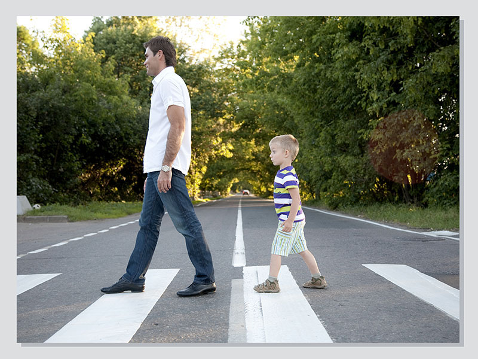

Comportamento a salvaguardia dei pedoni

Si deve usare maggiore prudenza nei confronti degli utenti deboli della strada:
Quando si parcheggia un veicolo è vietato ostruire eventuali scivoli del marciapiede per non impedire il passaggio di pedoni che spingono una carrozzina per bambini.
Potrebbero non fare adeguata attenzione ai veicoli, valutare male la velocità dei veicoli che sopraggiungono, fermarsi al centro della carreggiata e non reagire prontamente alle situazioni di pericolo.
Non bisogna avvicinarsi troppo con il veicolo, per evitare che si sentano minacciati e reagiscano con movimenti pericolosi.
Potrebbero attraversare improvvisamente la strada ad un semaforo senza seguire le norme legate alle segnalazioni luminose.
Potrebbero spingersi a vicenda, finendo sulla carreggiata.
Nelle vicinanza di una fermata di autobus potrebbero attraversare di corsa la strada per salire sullo scuolabus o scendere da esso senza fare attenzione ai veicoli che sopraggiungono.
Potrebbero non essere visibili mentre impegnano la carreggiata a causa di veicoli in sosta.
Se si è su strada extraurbana è consigliabile suonare il clacson prima di sorpassarli (non è vero che si devono sorpassare senza superare la velocità di 30 km/h).
Durante la marcia si deve controllare frequentemente nello specchietto retrovisore se sopraggiunge un ciclista o un motociclista.
Si deve tener presente che:
In vicinanza di un attraversamento pedonale, si deve essere molto prudenti (specie se ci sono anziani o bambini).
In vicinanza di un posteggio riservato ai taxi deve fare attenzione ai pedoni che salgono o scendono dal taxi, quindi rallentare ed eventualmente fermarsi se vi sono pedoni che attraversano la strada, senza le dovute precauzioni. Non può sostare nei posteggi riservati ai taxi.
- persone diversamente abili
- anziani
- bambini
- conducenti che dimostrano guida incerta
- conducenti di veicoli adattati per persone diversamente abili
- delle persone in bicicletta
- pedoni o di coloro con scarsa capacità di movimento
Pedone sordocieco
Ci si deve fermarsi e dare la precedenza al pedone non vedente con il bastone bianco (cieco) o bianco-rosso (sordo-cieco) accompagnato o meno da cane guida, che si accinge ad attraversare la strada, anche fuori dalle strisce pedonali, senza spaventarlo con una brusca frenata o con l'uso del clacson.Donne incinte
In presenza di donne in gravidanza o che spingono una carrozzina per bambini, deve evitare di avvicinarsi troppo con il veicolo per evitare di spaventarle.Quando si parcheggia un veicolo è vietato ostruire eventuali scivoli del marciapiede per non impedire il passaggio di pedoni che spingono una carrozzina per bambini.
Pedone anziano
Si deve tenere presente che persone anziane sono esposte a maggiori pericoli, perché data la loro età, le loro capacità visive e uditive non sono più eccellenti.Potrebbero non fare adeguata attenzione ai veicoli, valutare male la velocità dei veicoli che sopraggiungono, fermarsi al centro della carreggiata e non reagire prontamente alle situazioni di pericolo.
Non bisogna avvicinarsi troppo con il veicolo, per evitare che si sentano minacciati e reagiscano con movimenti pericolosi.
Bambini
In presenza di bambini deve tenere conto dei loro comportamenti imprevedibili, ed essere pronto a fermarsi.Potrebbero attraversare improvvisamente la strada ad un semaforo senza seguire le norme legate alle segnalazioni luminose.
Potrebbero spingersi a vicenda, finendo sulla carreggiata.
Nelle vicinanza di una fermata di autobus potrebbero attraversare di corsa la strada per salire sullo scuolabus o scendere da esso senza fare attenzione ai veicoli che sopraggiungono.
Potrebbero non essere visibili mentre impegnano la carreggiata a causa di veicoli in sosta.
Ciclisti, pedoni e motociclisti
Quando la carreggiata è occupata da ciclisti o pedoni, per sorpassarli deve mantenere un'adeguata distanza di sicurezza laterale.Se si è su strada extraurbana è consigliabile suonare il clacson prima di sorpassarli (non è vero che si devono sorpassare senza superare la velocità di 30 km/h).
Durante la marcia si deve controllare frequentemente nello specchietto retrovisore se sopraggiunge un ciclista o un motociclista.
Si deve tener presente che:
- i montanti interni degli autoveicoli condizionano la visibilità riducendo la possibilità di vedere un ciclista, un motociclista o un pedone
- un incidente, anche a bassa velocità, potrebbe creare gravi problemi fisici a pedoni, ciclisti e motociclisti
- prima di aprire lo sportello, bisogna controllare che non sopraggiungano pedoni, ciclisti o motociclisti
Semaforo pedonale
Prima di impegnare un incrocio, dopo che è scattata la luce verde del semaforo, il conducente deve attendere che i pedoni abbiano finito di attraversare la strada.In vicinanza di un attraversamento pedonale, si deve essere molto prudenti (specie se ci sono anziani o bambini).
Norme generali
Considerare:- che il pedone, nell'attraversare la strada, può diventare insicuro e ritornare improvvisamente indietro, o fermarsi improvvisamente sulle strisce dell'attraversamento pedonale
- che le persone anziane solitamente attraversano lentamente e con difficoltà
- che i bambini hanno spesso comportamenti imprevedibili
- che i pedoni, in special modo i bambini, possono sbucare all'improvviso tra i veicoli parcheggiati
In vicinanza di un posteggio riservato ai taxi deve fare attenzione ai pedoni che salgono o scendono dal taxi, quindi rallentare ed eventualmente fermarsi se vi sono pedoni che attraversano la strada, senza le dovute precauzioni. Non può sostare nei posteggi riservati ai taxi.